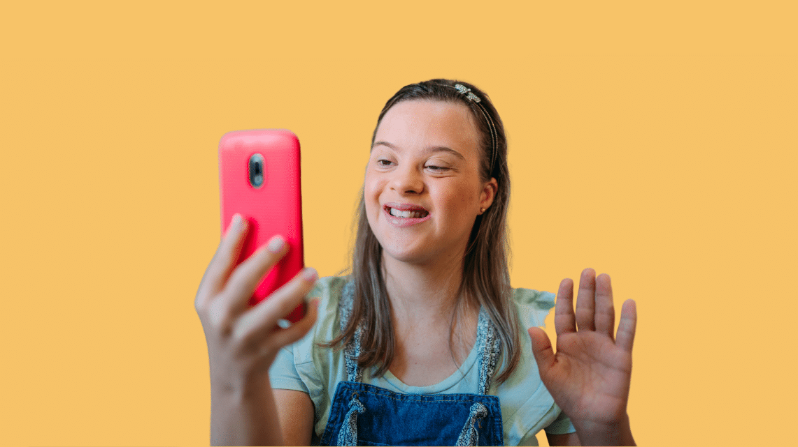

What is Cyberbullying?
Bullying is when someone says or does something unkind or unsafe to someone else.
When bullying happens on a device, like a computer or mobile phone, this is often called cyberbullying or online bullying. Cyberbullying also includes photos, messages, or pages that don't get taken down, even after the person has been asked to do so. In other words, it's anything that gets posted online and is meant to hurt, harass, or upset someone else.
What can you do?
1. Keep it locked.
Ask someone to help you set up a PIN or password to protect your phone, laptop and other devices. Do the same for all your accounts to protect any information about you that has been shared in them.
2. Keep it private.
Don’t tell people personal information like your address and phone number. Find out how to keep your profiles on social media private so only people you want to can see what you share.
3. Keep it to yourself.
Everything you do online leaves what’s known as a digital footprint. This is a record of what you do and say. Think very carefully before you say or post anything. You won’t be able to stop other people sharing it – even those you don’t know.
4. Keep it real.
Sometimes, people pretend to be someone else online. Check anyone who makes friends with you online is who they say they are. If you aren’t sure, ask someone you know to help you find out.
